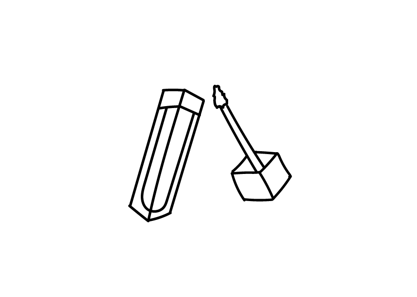
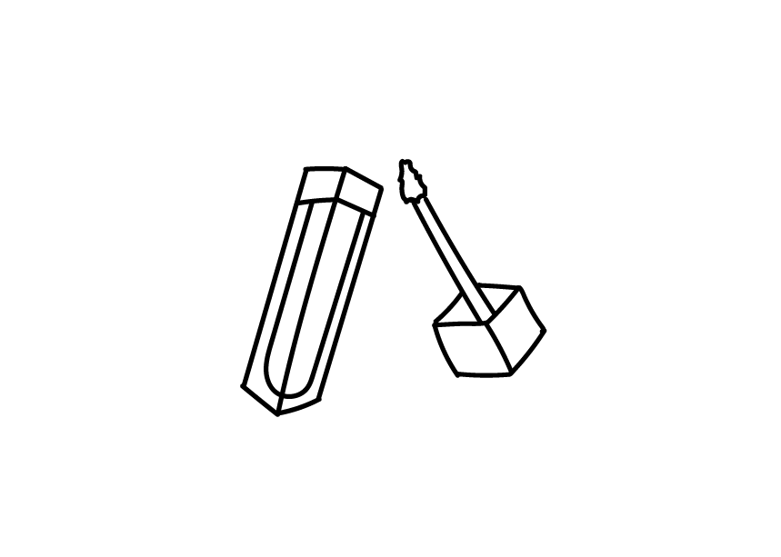
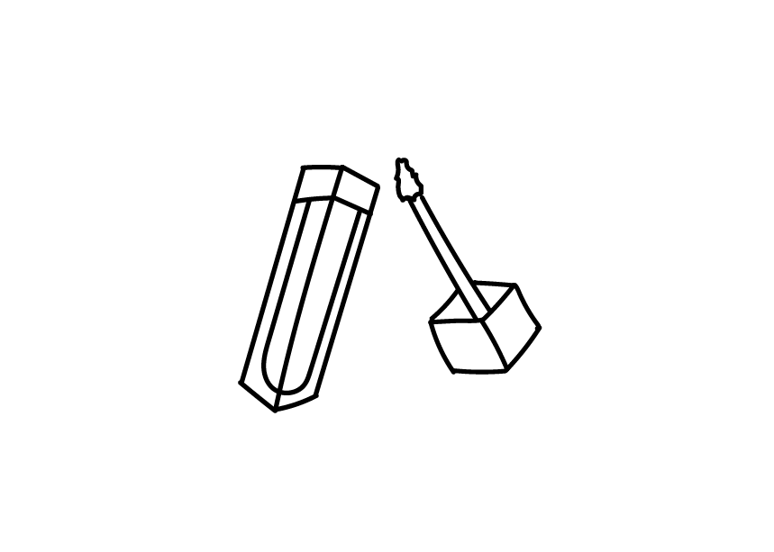

Hallo! Mijn naam is Alina Balaban en ik ben een grafische design student op AP hogeschool, ik zit nu in mijn eerste jaar maar ik heb in het middelbaar al 6 jaar in de grafische richting mee gevolgd. Vroeger zat ik op kunstacademie en in het 2de middelbaar koos ik voor schilder richting binnen die academie, waar ik dan veel heb geoefend op realisme. Ik vind animeren zeer leuk en ik heb nu meer een cartoon/ comic stijl met zachte pastel kleuren. Ik probeer nog veel te oefenen en mijn stijl wat meer uitbreiden.
Beetje meer info over mijn datasets, ik ga elke ochtend met de bus naar school wat een uurtje ongeveer duurt en ik luister altijd muziek daarop, wanneer ik op school aankom doe ik soms nog wat makeup op. Tijdens de middag eet ik meestal een broodje op school of iets anders dat ze in de cafetaria hebben die dag. Na school werk ik meestal verder aan mijn taken maar als ik vrije tijd heb animeer ik voor mezelf om meer te oefenen. Voor mijn avatar wilden ik een energieke karakter tekenen die blij is.
